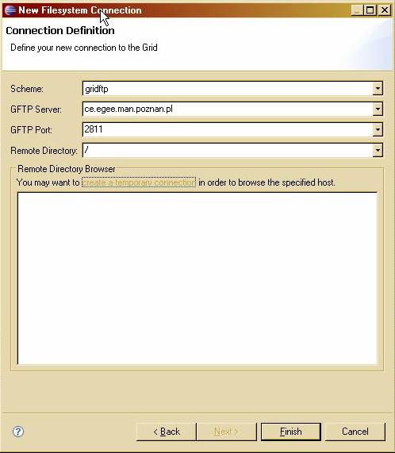

Grid Data Access
How to implement MY Grid data access system?
- Access to data on the Grid is offered by services. These
services allows the user to browse directories and list files on
remote Grid systems. Current implementations for
- GridFTP services
- SRM 2.0 services
UI Components
The Connection Wizard allows to define new remote connection.
tokens.

Important Extension points
UI extension point
org.eclipse.core.filesystem.filesystems- Provides a scheme for defining new type of filesystem
Core extension point
eu.geclipse.ui.efs- Allows to define efs ui extension for implemented filesystem
Interfaces to implement
eu.geclipse.org.eclipse.core.filesystem.provider.FileSystem- Implement this to define new type of filesystem